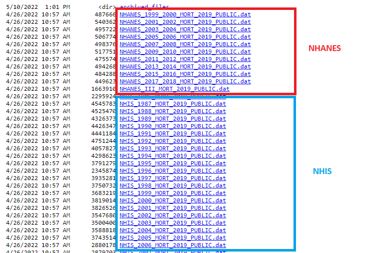
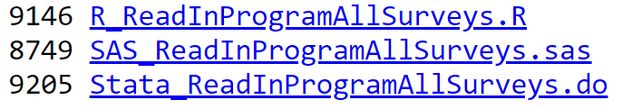
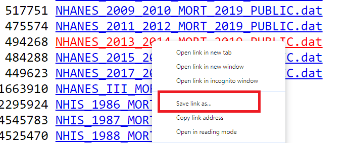

Linking mortality data
This tutorial provides instructions on linking public-use US mortality data with National Health and (Nutrition Examination Survey (NHANES))[https://www.cdc.gov/nchs/nhanes/index.htm] dataset. One can also follow the same steps to link the mortality data with (National Health Interview Survey (NHIS))[https://www.cdc.gov/nchs/nhis/index.htm]
Download mortality data
The public-use mortality data can be downloaded directly from the (CDC website)[https://ftp.cdc.gov/pub/Health_Statistics/NCHS/datalinkage/linked_mortality/]. Datasets are available in .dat format, separately for each cycle of NHANES and NHIS.
On the same website, CDC also provided R, SAS, and Stata codes with instructions on how to download the datasets directly from the website.

We can click on the desired survey link to download and save the datasets on our own hard drive. The dataset will be directly downloaded to our specified download folder. Alternatively, we can right-click on the desired survey link and select Save link as...

Note that the data file is saved as <survey name>_MORT_2019_PUBLIC.dat. In our example, we downloaded mortality data for the NHANES 2013-14 participants. Hence, the name of the file should be NHANES_2013_2014_MORT_2019_PUBLIC.dat.
Link mortality data to NHANES
Let us link the mortality data to the NHANES 2013-14 cycle. The steps are as follows:
- Download morality data for the NHANES 2013-14 cycle
- Load the morality data on the R environment
- Load NHANES 2013-14 cycle
- Merge two datasets using the unique identifier
Download morality data
We can follow the steps described above to download the mortality dataset directly from the CDC website.
Load the morality data on the R environment
To load the dataset, we can use the read_fwf function from the readr package.
library(readr)
library(dplyr)
dat.mort <- read_fwf(
file = "Data/accessing/NHANES_2013_2014_MORT_2019_PUBLIC.dat",
col_types = "iiiiiiii",
fwf_cols(SEQN = c(1,6),
eligstat = c(15,15),
mortstat = c(16,16),
ucod_leading = c(17,19),
diabetes = c(20,20),
hyperten = c(21,21),
permth_int = c(43,45),
permth_exm = c(46,48)),
na = c("", "."))
head(dat.mort)In the code chuck above,
SEQN: unique identifier for NHANES
-
eligstat: Eligibility Status for Mortality Follow-up
- 1 = Eligible
- 2 = Under age 18, not available for public release
- 3 = Ineligible
-
mortstat: Mortality Status
- 0 = Assumed alive
- 1 = Assumed deceased
- NA = Ineligible or under age 18
-
ucod_leading: Underlying Cause of Death
- 1 = Diseases of heart (I00-I09, I11, I13, I20-I51)
- 2 = Malignant neoplasms (C00-C97)
- 3 = Chronic lower respiratory diseases (J40-J47)
- 4 = Accidents (unintentional injuries) (V01-X59, Y85-Y86)
- 5 = Cerebrovascular diseases (I60-I69)
- 6 = Alzheimer’s disease (G30)
- 7 = Diabetes mellitus (E10-E14)
- 8 = Influenza and pneumonia (J09-J18)
- 9 = Nephritis, nephrotic syndrome and nephrosis (N00-N07, N17-N19, N25-N27)
- 10 = All other causes
- NA = Ineligible, under age 18, assumed alive, or no cause of death data available
-
diabetes: Diabetes Flag from Multiple Cause of Death (MCOD)
- 0 = No - Condition not listed as a multiple cause of death
- 1 = Yes - Condition listed as a multiple cause of death
- NA = Assumed alive, under age 18, ineligible for mortality follow-up, or MCOD not available
-
hyperten: Hypertension Flag from Multiple Cause of Death (MCOD)
- 0 = No - Condition not listed as a multiple cause of death
- 1 = Yes - Condition listed as a multiple cause of death
- NA = Assumed alive, under age 18, ineligible for mortality follow-up, or MCOD not available
permth_int: Person-Months of Follow-up from NHANES Interview date
permth_exm: Person-Months of Follow-up from NHANES Mobile Examination Center (MEC) Date
Let us see the basic summary statistics of some variables:
# Mortality Status
table(dat.mort$mortstat, useNA = "always")
#>
#> 0 1 <NA>
#> 5633 467 4075
# Person-Months of Follow-up from NHANES Interview date
summary(dat.mort$permth_int)
#> Min. 1st Qu. Median Mean 3rd Qu. Max. NA's
#> 1.00 65.00 72.00 70.34 79.00 85.00 4075
# Underlying Cause of Death
table(dat.mort$ucod_leading, useNA = "always")
#>
#> 1 2 3 4 5 6 7 8 9 10 <NA>
#> 136 99 24 14 28 17 21 9 16 103 9708Load NHANES 2013-14 cycle
Let the open the NHANES 2013-14 dataset we created in the previous chapter on (Reproducing results)[accessing4.html].
Merge mortality data and NHANES 2013-14 using unique identifier
Let us merge the mortality and NHANES datasets using the SEQN variable.
Table 1
Now we will use the dat.nhanes dataset to create Table 1 with utilizing survey features (i.e., psu, strata, and survey weights). First, we will create the survey design. Second, we will report Table 1 with age, sex, race, eligibility, all-cause mortality status, diabetes-related death, hypertension-related death, and follow-up times.
library(tableone)
library(survey)
# Make eligibility and mortality status as factor variable
factor.vars <- c("eligstat", "mortstat", "diabetes", "hyperten")
dat.nhanes[,factor.vars] <- lapply(dat.nhanes[,factor.vars] , factor)
# Survey design
w.design <- svydesign(id = ~psu, strata = ~strata, weights = ~survey.weight,
data = dat.nhanes, nest = T)
# Table 1 - unweighted frequency or mean
tab1a <- CreateTableOne(var = c("AgeCat", "Gender", "Race", "eligstat", "mortstat",
"diabetes", "hyperten", "permth_int", "permth_exm"),
data = dat.nhanes, includeNA = T)
print(tab1a, showAllLevels = T, format = "f")
#>
#> level Overall
#> n 5455
#> AgeCat [0,20) 0
#> [20,40) 1810
#> [40,60) 1896
#> [60,Inf) 1749
#> Gender Female 2817
#> Male 2638
#> Race White 2343
#> Black 1115
#> Asian 623
#> Hispanic 1214
#> <NA> 160
#> eligstat 1 5445
#> 3 10
#> mortstat 0 5030
#> 1 415
#> <NA> 10
#> diabetes 0 374
#> 1 41
#> <NA> 5040
#> hyperten 0 344
#> 1 71
#> <NA> 5040
#> permth_int (mean (SD)) 70.40 (12.18)
#> permth_exm (mean (SD)) 69.49 (12.20)
# Table 1 - weighted percentage or mean
tab1b <- svyCreateTableOne(var = c("AgeCat", "Gender", "Race", "eligstat", "mortstat",
"diabetes", "hyperten", "permth_int", "permth_exm"),
data = w.design, includeNA = T)
print(tab1b, showAllLevels = T, format = "p")
#>
#> level Overall
#> n 217464332.1
#> AgeCat (%) [0,20) 0.0
#> [20,40) 35.5
#> [40,60) 37.5
#> [60,Inf) 27.0
#> Gender (%) Female 51.4
#> Male 48.6
#> Race (%) White 66.1
#> Black 11.4
#> Asian 5.2
#> Hispanic 14.7
#> <NA> 2.7
#> eligstat (%) 1 99.9
#> 3 0.1
#> mortstat (%) 0 93.6
#> 1 6.2
#> <NA> 0.1
#> diabetes (%) 0 5.5
#> 1 0.7
#> <NA> 93.8
#> hyperten (%) 0 5.2
#> 1 1.0
#> <NA> 93.8
#> permth_int (mean (SD)) 70.71 (11.28)
#> permth_exm (mean (SD)) 69.80 (11.31)